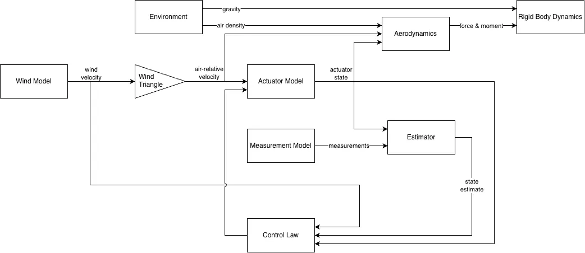

Theory: Simulation
Symbols follow the canonical notation. This page defines the coupled dynamical system obtained by composing the rigid body, environment, wind, aerodynamic, actuator, measurement, estimation, and control models. The subsystem theory pages define the individual maps used below.
Coupled Aircraft Model
The simulation represents the aircraft and its supporting models as a continuous-time stochastic dynamical system. A complete model comprises:
- rigid body dynamics
- environmental gravity and atmospheric properties
- wind
- nominal and residual aerodynamics
- actuator dynamics
- measurement dynamics
- state estimation
- feedback control
The subsystem parameters are fixed over a simulation unless their time dependence is included explicitly in the corresponding model. A subsystem may be stateless, in which case it contributes algebraic outputs but no states to the dynamical system.
Extended Simulation State
The state of the coupled system is the concatenation
\[\bm{x} = \begin{bmatrix} \bm{x}_\mathrm{rb} \\ \bm{x}_\mathrm{aero} \\ \bm{x}_\mathrm{act} \\ \bm{x}_\mathrm{est} \\ \bm{x}_\mathrm{ctrl} \\ \bm{x}_w \\ \bm{x}_\mathrm{res} \\ \bm{x}_\mathrm{meas} \end{bmatrix} \in \mathbb{R}^{n_x}\]
where the total state dimension is
\[n_x = n_\mathrm{rb} + n_\mathrm{aero} + n_\mathrm{act} + n_\mathrm{est} + n_\mathrm{ctrl} + n_w + n_\mathrm{res} + n_\mathrm{meas}\]
A stateless subsystem has zero state dimension and contributes an empty block. For example, an ideal actuator has no internal state and satisfies the algebraic relation $\bm{\delta}=\bm{u}$.
Subsystem Interconnection and Causality
The signal flow of subsystem outputs is shown below. Note that the appropriate components of the simulation state vector $\bm{x}$ are available to all blocks in this diagram.

Extended Simulation Dynamics
The drift vector field is constructed as
\[ \bm{f} = \begin{bmatrix} \bm{f}_\mathrm{rb} \\ \bm{f}_\mathrm{aero} \\ \bm{f}_\mathrm{act} \\ \bm{f}_\mathrm{est} \\ \bm{f}_\mathrm{ctrl} \\ \bm{f}_w \\ \bm{f}_\mathrm{res} \\ \bm{f}_\mathrm{meas} \end{bmatrix}\]
Stochastic forcing enters through the wind, aerodynamic model residual, and measurement model dynamics. Under the assumption that their driving Wiener processes are mutually independent, the diffusion matrix has the block form
\[\bm{\sigma} = \begin{bmatrix} \bm{0} & \bm{0} & \bm{0} \\ \bm{0} & \bm{0} & \bm{0} \\ \bm{0} & \bm{0} & \bm{0} \\ \bm{0} & \bm{0} & \bm{0} \\ \bm{0} & \bm{0} & \bm{0} \\ \bm{\sigma}_w & \bm{0} & \bm{0} \\ \bm{0} & \bm{\sigma}_\mathrm{res} & \bm{0} \\ \bm{0} & \bm{0} & \bm{\sigma}_\mathrm{meas} \end{bmatrix}\]
The corresponding Wiener process is
\[\bm{W} = \begin{bmatrix} \bm{W}_w \\ \bm{W}_\mathrm{res} \\ \bm{W}_\mathrm{meas} \end{bmatrix} \in \mathbb{R}^{m_x}\]
with total noise dimension
\[m_x = m_w + m_\mathrm{res} + m_\mathrm{meas}\]
The complete stochastic dynamics are therefore
\[\mathrm{d}\bm{x} = \bm{f}(\bm{x},t)\mathrm{d}t + \bm{\sigma}(\bm{x},t)\mathrm{d}\bm{W}\]
If $m_x=0$, the diffusion term is absent and the model reduces to the ordinary differential equation
\[\mathrm{d}\bm{x} = \bm{f}(\bm{x},t)\mathrm{d}t \quad \Longleftrightarrow \quad \dot{\bm{x}} = \bm{f}(\bm{x},t)\]
Together with an initial condition $\bm{x}(t_0)=\bm{x}_0$, these equations define the simulation trajectory. Deterministic trajectories are solutions of the ordinary differential equation, while stochastic trajectories are sample paths of the stochastic differential equation.